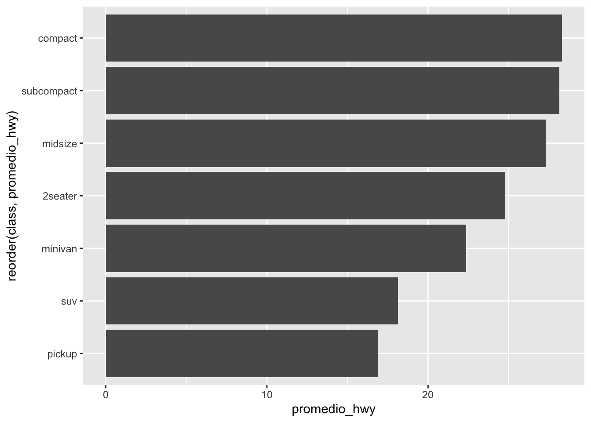
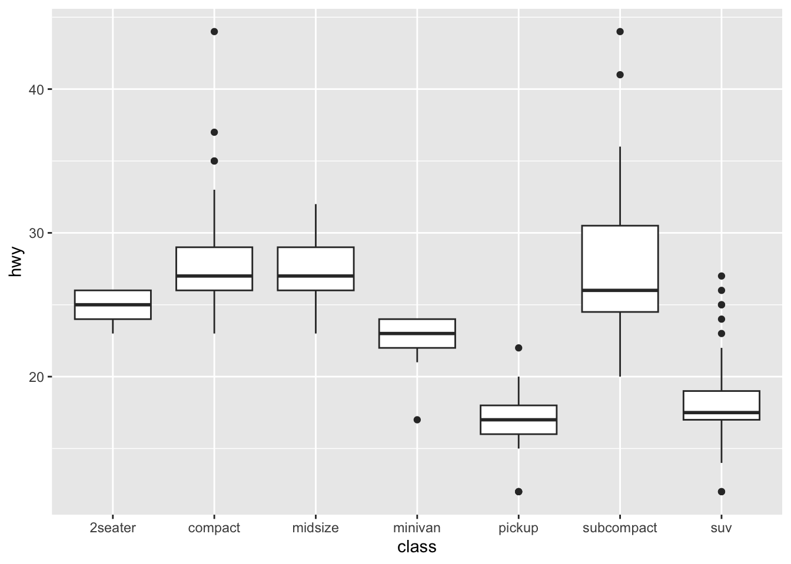
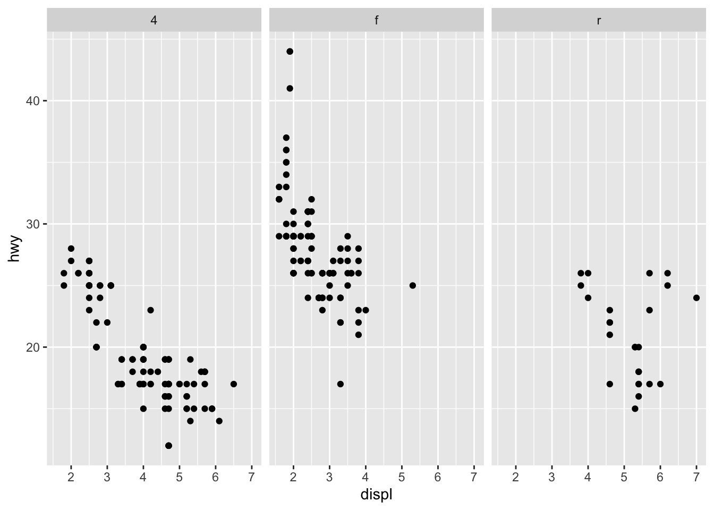

library(tidyverse)Sesión 1
Grupo de Estudio de Estadística Correlacional
Introduccion a Positron y R
En esta sesión, aprenderemos los conceptos básicos de Positron y R, dos herramientas fundamentales para el análisis de datos en estadística.
Objetivos de la sesión
Al finalizar esta clase vas a poder:
- Entender qué es el tidyverse y por qué se usa en análisis de datos con R.
- Manipular bases de datos con las funciones principales de dplyr.
- Usar el operador pipe (
|>o%>%) para encadenar transformaciones. - Construir visualizaciones con la lógica de capas de ggplot2.
NoteAntes de empezar
Asegúrate de tener R y Positron instalados, y de haber corrido al menos una vez:
install.packages("tidyverse")1. ¿Qué es el tidyverse?
El tidyverse no es un solo paquete, sino una colección de paquetes de R diseñados para trabajar juntos bajo una misma filosofía: los datos “ordenados” (tidy data), donde:
- cada variable es una columna,
- cada observación es una fila,
- cada valor ocupa una celda.
Al cargar tidyverse se cargan automáticamente varios paquetes, entre los que destacan:
| Paquete | Función principal |
|---|---|
dplyr |
Manipulación de datos (filtrar, seleccionar, transformar) |
ggplot2 |
Visualización de datos por capas |
tidyr |
Ordenar y reestructurar bases de datos |
readr |
Importar datos (csv, txt) |
tibble |
Una versión mejorada de los data.frame |
purrr |
Programación funcional (iteraciones) |
stringr |
Manipulación de texto |
Para esta clase usaremos la base de datos mpg, que viene incluida con ggplot2 y contiene información sobre el consumo de combustible de distintos modelos de auto.
library(tidyverse)── Attaching core tidyverse packages ──────────────────────── tidyverse 2.0.0 ──
✔ dplyr 1.2.1 ✔ readr 2.2.0
✔ forcats 1.0.1 ✔ stringr 1.6.0
✔ ggplot2 4.0.3 ✔ tibble 3.3.1
✔ lubridate 1.9.5 ✔ tidyr 1.3.2
✔ purrr 1.2.2
── Conflicts ────────────────────────────────────────── tidyverse_conflicts() ──
✖ dplyr::filter() masks stats::filter()
✖ dplyr::lag() masks stats::lag()
ℹ Use the conflicted package (<http://conflicted.r-lib.org/>) to force all conflicts to become errorsglimpse(mpg)Rows: 234
Columns: 11
$ manufacturer <chr> "audi", "audi", "audi", "audi", "audi", "audi", "audi", "…
$ model <chr> "a4", "a4", "a4", "a4", "a4", "a4", "a4", "a4 quattro", "…
$ displ <dbl> 1.8, 1.8, 2.0, 2.0, 2.8, 2.8, 3.1, 1.8, 1.8, 2.0, 2.0, 2.…
$ year <int> 1999, 1999, 2008, 2008, 1999, 1999, 2008, 1999, 1999, 200…
$ cyl <int> 4, 4, 4, 4, 6, 6, 6, 4, 4, 4, 4, 6, 6, 6, 6, 6, 6, 8, 8, …
$ trans <chr> "auto(l5)", "manual(m5)", "manual(m6)", "auto(av)", "auto…
$ drv <chr> "f", "f", "f", "f", "f", "f", "f", "4", "4", "4", "4", "4…
$ cty <int> 18, 21, 20, 21, 16, 18, 18, 18, 16, 20, 19, 15, 17, 17, 1…
$ hwy <int> 29, 29, 31, 30, 26, 26, 27, 26, 25, 28, 27, 25, 25, 25, 2…
$ fl <chr> "p", "p", "p", "p", "p", "p", "p", "p", "p", "p", "p", "p…
$ class <chr> "compact", "compact", "compact", "compact", "compact", "c…2. dplyr: los verbos básicos
dplyr organiza la manipulación de datos en torno a un puñado de verbos (funciones) que hacen una cosa cada uno, y se combinan entre sí.
2.1 select() — elegir columnas
mpg |>
select(manufacturer, model, year, cty, hwy)# A tibble: 234 × 5
manufacturer model year cty hwy
<chr> <chr> <int> <int> <int>
1 audi a4 1999 18 29
2 audi a4 1999 21 29
3 audi a4 2008 20 31
4 audi a4 2008 21 30
5 audi a4 1999 16 26
6 audi a4 1999 18 26
7 audi a4 2008 18 27
8 audi a4 quattro 1999 18 26
9 audi a4 quattro 1999 16 25
10 audi a4 quattro 2008 20 28
# ℹ 224 more rowsTambién puedes excluir columnas con -:
mpg |>
select(-class, -trans)# A tibble: 234 × 9
manufacturer model displ year cyl drv cty hwy fl
<chr> <chr> <dbl> <int> <int> <chr> <int> <int> <chr>
1 audi a4 1.8 1999 4 f 18 29 p
2 audi a4 1.8 1999 4 f 21 29 p
3 audi a4 2 2008 4 f 20 31 p
4 audi a4 2 2008 4 f 21 30 p
5 audi a4 2.8 1999 6 f 16 26 p
6 audi a4 2.8 1999 6 f 18 26 p
7 audi a4 3.1 2008 6 f 18 27 p
8 audi a4 quattro 1.8 1999 4 4 18 26 p
9 audi a4 quattro 1.8 1999 4 4 16 25 p
10 audi a4 quattro 2 2008 4 4 20 28 p
# ℹ 224 more rows2.2 filter() — elegir filas según una condición
mpg |>
filter(year == 2008)# A tibble: 117 × 11
manufacturer model displ year cyl trans drv cty hwy fl class
<chr> <chr> <dbl> <int> <int> <chr> <chr> <int> <int> <chr> <chr>
1 audi a4 2 2008 4 manu… f 20 31 p comp…
2 audi a4 2 2008 4 auto… f 21 30 p comp…
3 audi a4 3.1 2008 6 auto… f 18 27 p comp…
4 audi a4 quattro 2 2008 4 manu… 4 20 28 p comp…
5 audi a4 quattro 2 2008 4 auto… 4 19 27 p comp…
6 audi a4 quattro 3.1 2008 6 auto… 4 17 25 p comp…
7 audi a4 quattro 3.1 2008 6 manu… 4 15 25 p comp…
8 audi a6 quattro 3.1 2008 6 auto… 4 17 25 p mids…
9 audi a6 quattro 4.2 2008 8 auto… 4 16 23 p mids…
10 chevrolet c1500 sub… 5.3 2008 8 auto… r 14 20 r suv
# ℹ 107 more rowsSe pueden combinar condiciones con & (Y) o | (O):
mpg |>
filter(manufacturer == "audi" & year == 2008)# A tibble: 9 × 11
manufacturer model displ year cyl trans drv cty hwy fl class
<chr> <chr> <dbl> <int> <int> <chr> <chr> <int> <int> <chr> <chr>
1 audi a4 2 2008 4 manua… f 20 31 p comp…
2 audi a4 2 2008 4 auto(… f 21 30 p comp…
3 audi a4 3.1 2008 6 auto(… f 18 27 p comp…
4 audi a4 quattro 2 2008 4 manua… 4 20 28 p comp…
5 audi a4 quattro 2 2008 4 auto(… 4 19 27 p comp…
6 audi a4 quattro 3.1 2008 6 auto(… 4 17 25 p comp…
7 audi a4 quattro 3.1 2008 6 manua… 4 15 25 p comp…
8 audi a6 quattro 3.1 2008 6 auto(… 4 17 25 p mids…
9 audi a6 quattro 4.2 2008 8 auto(… 4 16 23 p mids…2.3 mutate() — crear o modificar variables
mpg |>
mutate(promedio_consumo = (cty + hwy) / 2) |>
select(manufacturer, model, cty, hwy, promedio_consumo)# A tibble: 234 × 5
manufacturer model cty hwy promedio_consumo
<chr> <chr> <int> <int> <dbl>
1 audi a4 18 29 23.5
2 audi a4 21 29 25
3 audi a4 20 31 25.5
4 audi a4 21 30 25.5
5 audi a4 16 26 21
6 audi a4 18 26 22
7 audi a4 18 27 22.5
8 audi a4 quattro 18 26 22
9 audi a4 quattro 16 25 20.5
10 audi a4 quattro 20 28 24
# ℹ 224 more rows2.4 arrange() — ordenar filas
mpg |>
arrange(desc(hwy)) |>
select(manufacturer, model, hwy)# A tibble: 234 × 3
manufacturer model hwy
<chr> <chr> <int>
1 volkswagen jetta 44
2 volkswagen new beetle 44
3 volkswagen new beetle 41
4 toyota corolla 37
5 honda civic 36
6 honda civic 36
7 toyota corolla 35
8 toyota corolla 35
9 honda civic 34
10 honda civic 33
# ℹ 224 more rows2.5 summarise() y group_by() — resumir datos
summarise() reduce muchas filas a un resumen (por ejemplo, un promedio). Se vuelve mucho más útil combinado con group_by(), que agrupa los datos antes de resumir:
mpg |>
group_by(class) |>
summarise(
promedio_hwy = mean(hwy),
n_autos = n()
) |>
arrange(desc(promedio_hwy))# A tibble: 7 × 3
class promedio_hwy n_autos
<chr> <dbl> <int>
1 compact 28.3 47
2 subcompact 28.1 35
3 midsize 27.3 41
4 2seater 24.8 5
5 minivan 22.4 11
6 suv 18.1 62
7 pickup 16.9 33
Tip¿Qué es el operador
|>?
El operador pipe (|> en R base, o %>% si usas magrittr) toma lo que está a su izquierda y lo pasa como primer argumento a la función de la derecha. Esto permite leer el código como una secuencia de pasos, de arriba hacia abajo, en vez de anidar funciones unas dentro de otras.
# Sin pipe (difícil de leer)
arrange(summarise(group_by(mpg, class), promedio = mean(hwy)), desc(promedio))
# Con pipe (más claro)
mpg |>
group_by(class) |>
summarise(promedio = mean(hwy)) |>
arrange(desc(promedio))2.6 Encadenando todo junto
Un flujo típico de trabajo combina varios verbos en una sola secuencia:
mpg |>
filter(class %in% c("compact", "suv")) |>
group_by(class, drv) |>
summarise(promedio_hwy = mean(hwy), .groups = "drop") |>
arrange(class, desc(promedio_hwy))# A tibble: 4 × 3
class drv promedio_hwy
<chr> <chr> <dbl>
1 compact f 29.1
2 compact 4 25.8
3 suv 4 18.3
4 suv r 17.53. ggplot2: la gramática de gráficos
ggplot2 construye gráficos por capas. La estructura básica siempre parte igual:
ggplot(data = <datos>, mapping = aes(<variables>)) +
<geometría>()data: la base de datos.aes()(aesthetic mappings): qué variables van en qué ejes/colores/formas.geom_*(): qué tipo de gráfico (puntos, barras, líneas, etc.).
3.1 Gráfico de dispersión (geom_point)
ggplot(mpg, aes(x = displ, y = hwy)) +
geom_point()
3.2 Agregando una tercera variable con color
ggplot(mpg, aes(x = displ, y = hwy, color = class)) +
geom_point()
3.3 Gráfico de barras (geom_bar / geom_col)
geom_bar() cuenta observaciones automáticamente:
ggplot(mpg, aes(x = class)) +
geom_bar()
Si ya tienes los valores calculados (por ejemplo, con summarise()), usa geom_col():
mpg |>
group_by(class) |>
summarise(promedio_hwy = mean(hwy)) |>
ggplot(aes(x = reorder(class, promedio_hwy), y = promedio_hwy)) +
geom_col() +
coord_flip()
3.4 Boxplot (geom_boxplot)
Útil para comparar la distribución de una variable numérica entre grupos:
ggplot(mpg, aes(x = class, y = hwy)) +
geom_boxplot()
3.5 Facetas: un panel por categoría
ggplot(mpg, aes(x = displ, y = hwy)) +
geom_point() +
facet_wrap(~ drv)
3.6 Personalizando el gráfico
ggplot(mpg, aes(x = displ, y = hwy, color = class)) +
geom_point(size = 2, alpha = 0.7) +
labs(
title = "Relación entre cilindrada y rendimiento en autopista",
subtitle = "Datos de mpg (ggplot2)",
x = "Cilindrada del motor (litros)",
y = "Rendimiento en autopista (millas/galón)",
color = "Tipo de vehículo"
) +
theme_minimal()
ImportantCombinando dplyr y ggplot2
En la práctica, casi siempre vas a transformar los datos con dplyr y graficarlos con ggplot2 en un mismo flujo, encadenando todo con el pipe:
mpg |>
filter(class != "2seater") |>
group_by(class) |>
summarise(promedio_hwy = mean(hwy)) |>
ggplot(aes(x = reorder(class, promedio_hwy), y = promedio_hwy, fill = class)) +
geom_col(show.legend = FALSE) +
coord_flip() +
labs(x = NULL, y = "Rendimiento promedio en autopista",
title = "Rendimiento promedio en autopista por tipo de vehículo")
4. Ejercicio propuesto
TipHaz clic para ver el ejercicio
Usando la base mpg:
- Filtra los datos para quedarte solo con autos con
cyl(número de cilindros) igual a 4 o 6. - Crea una nueva variable llamada
eficiencia, que sea el promedio entrectyyhwy. - Agrupa por
manufacturery calcula el promedio deeficiencia. - Ordena de mayor a menor eficiencia.
- Grafica los 5 fabricantes más eficientes usando
geom_col().
Pista: vas a necesitar filter(), mutate(), group_by(), summarise(), arrange(), slice_head() y ggplot().